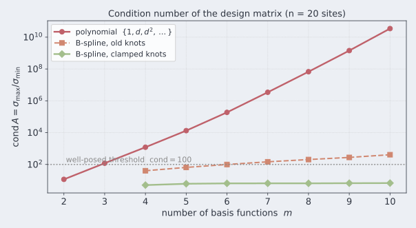
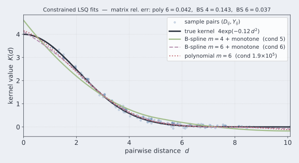
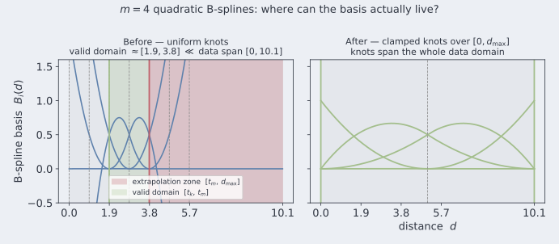
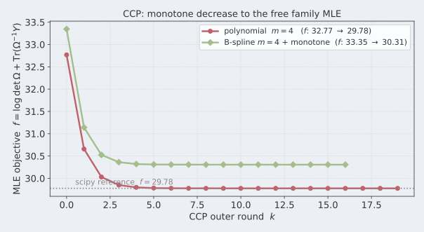
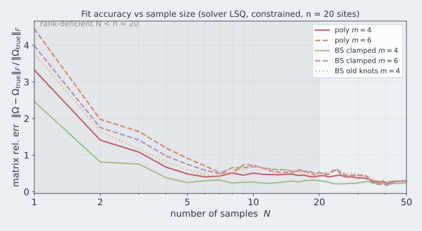
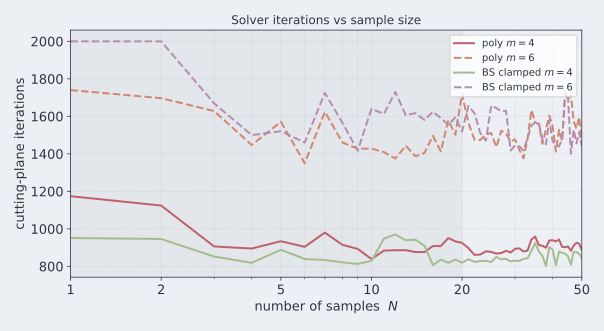

layout: true class: typo, typo-selection --- count: false class: nord-dark, middle, center # 📉 Poly vs B-Spline ## Fitting correlation kernels — conditioning matters, and so do your knots ### 📐 🧮 🐛 🪄 @luk036 👨💻 · 2026 📅 --- ### 📋 Agenda .pull-left[ **Part 1 — The Contest** 🥊 - One model, two bases - Polynomial monomials vs B-splines - Conditioning: $10$ orders of magnitude 🔢 **Part 2 — The Experiment** 🔬 - 20 Halton sites, $N = 3000$ samples - Who actually tracks the true kernel? 📈 **Part 3 — The Knot-Domain Bug** 🐛 - A basis that *cannot see* its own data - An off-by-one that frees the last coefficient ] .pull-right[ **Part 4 — The Fix** 🪄 - Clamped knots over $[0, d_{\max}]$ - The right number of coefficients to constrain **Part 5 — CCP with B-splines** 🔁 - The convex-concave procedure, basis-agnostic - Monotone fits, positive-definite $\Omega$ ✅ **Part 6 — Scaling N = 1..50** 📊 - Rank-deficient $Y$ for $N < 20$ - Small $N$: B-spline $m{=}4$ wins; large $N$: capacity wins **Part 7 — Tests** 🧪 - 22 passed, 99% coverage **Part 8 — Takeaways** 🧠 ] --- class: nord-light, middle, center ## 🥊 Part 1 — The Contest --- ### ⚖️ One Model, Two Bases Both families build the same covariance model from the pairwise distance matrix $D$: $$ {\color{#5e81ac}\Omega(p)} \;=\; \sum_{k=1}^{m} p_k\, {\color{#5e81ac}\Sigma_k} \;\succeq\; 0 $$ > The difference is *what* the $\Sigma_k$ are — and how stable they are to fit. 🎯 .pull-left[ **LSQ** 🟦 — Frobenius residual $$ \min_p \; \bigl\|{\color{#bf616a}Y} - {\color{#5e81ac}\Omega(p)}\bigr\|_F \quad \text{s.t.} \quad {\color{#5e81ac}\Omega(p)} \succeq 0 $$ - No upper bound on $\Omega$ 🚫 - Targets the *shape* of $Y$ 🎯 ] .pull-right[ **MLE** 🟥 — Gaussian likelihood $$ \min_p \; \log\det {\color{#5e81ac}\Omega(p)} + \operatorname{Tr}\!\bigl({\color{#5e81ac}\Omega(p)}^{-1}{\color{#bf616a}Y}\bigr) $$ $$ \text{s.t.} \quad 2{\color{#bf616a}Y} \succeq {\color{#5e81ac}\Omega(p)} \succeq 0 $$ - Upper bound $2Y$ is a *trust region*, not a constraint 🤔 - Solved by the same cutting-plane machinery ✅ ] --- ### 🧱 The Two Families .pull-left[ **Polynomial** 🟥 — monomials of distance $$ \varphi_k(d) = d^{\,k}, \qquad k = 0, \dots, m-1 $$ - Global support: every basis function touches every $d$ 🌐 - Simple, universal — but highly correlated ] .pull-right[ **B-spline** 🟩 — quadratic ($k=2$) on knots $t$ $$ K(d) \;=\; \sum_{i=1}^{m} c_i\, B_i(d), \qquad B_i \text{ local, } \sum_i B_i = 1 $$ - Local support: each $B_i$ is nonzero on $\approx 3$ knot spans 🧩 - Partition of unity, shape constraints "for free" ] .mermaid[ <pre> graph LR S["site distances D"] --> P["polynomial basis: D^0, D^1, D^2, ..."] S --> B["B-spline basis\n{B_i(d)} on knots t"] P --> A["design matrices Sigma_1..m"] B --> A A --> O["cutting-plane solver"] style S fill:#eceff4,stroke:#4c566a,stroke-width:3px style P fill:#fff9c4,stroke:#f57f17,stroke-width:3px style B fill:#d5f5e3,stroke:#2e7d32,stroke-width:3px style A fill:#e3f2fd,stroke:#1565c0,stroke-width:3px style O fill:#fadbd8,stroke:#c0392b,stroke-width:3px </pre> ] --- ### 🔢 Conditioning: the First Skirmish $$ \operatorname{cond}(A) \;=\; \frac{\sigma_{\max}(A)}{\sigma_{\min}(A)} \qquad A = \bigl[\operatorname{vec}(\Sigma_1) \;\cdots\; \operatorname{vec}(\Sigma_m)\bigr] $$ <p align="center"> <p></p> </p> - **Polynomial**: $1.2\times10^{1} \to 3.5\times10^{10}$ as $m: 2 \to 10$ — nine orders of magnitude 💥 - **B-spline, old knots**: grows mildly ($40 \to 409$) — but wrong for another reason 🐛 - **B-spline, clamped**: flat at $\approx 5\text{–}7$ ✅ > Sane conditioning is *free* — it just needs the right knots. 🎯 --- class: nord-light, middle, center ## 🔬 Part 2 — The Experiment --- ### 🧪 Experimental Setup .pull-left[ **Data** 🗺️ - $n = 20$ Halton sites on a $5\times4$ grid - Pairwise distances $D$, $d_{\max} = 10.096$ - True kernel $K(d) = 4\exp(-0.12\,d^2)$ - $N = 3000$ samples → biased $Y$ 🎲 **Solver** 🧮 - `lsq_oracle` + cutting-plane (`ellalgo`) - Monotonicity via `mono_decreasing_oracle2` - Same core for both bases 🤝 ] .pull-right[ **Metrics** 📏 - $\operatorname{cond}(A)$ — how hard is the basis? - matrix rel. err vs the *true* kernel - monotonicity violations of the fitted kernel - iterations, feasibility ✅ ] .mermaid[ <pre> graph LR S["Halton sites\n5 x 4 grid"] --> D["distances D\n20 x 20, dmax = 10.1"] D --> SP["basis Sigma_1..m\npoly or B-spline"] D --> TK["true kernel\n4 exp(-0.12 d^2)"] TK --> Y["biased Y\nN = 3000 samples"] SP --> SOL["cutting-plane\nsolver"] Y --> SOL SOL --> FIT["fitted kernel K_hat(d)"] style S fill:#eceff4,stroke:#4c566a,stroke-width:3px style D fill:#e3f2fd,stroke:#1565c0,stroke-width:3px style SP fill:#fff9c4,stroke:#f57f17,stroke-width:3px style Y fill:#fadbd8,stroke:#c0392b,stroke-width:3px style SOL fill:#e3f2fd,stroke:#1565c0,stroke-width:3px style FIT fill:#d5f5e3,stroke:#2e7d32,stroke-width:3px </pre> ] --- ### 📈 Who Tracks the True Kernel? <p align="center"> <p></p> </p> - Both families can model the kernel — accuracy is **comparable** 🤝 - Polynomial $m{=}6$: rel. err $0.042$ at $\operatorname{cond} = 1.9\times10^5$ 🟥 - B-spline $m{=}6$ (clamped, monotone): rel. err $\mathbf{0.037}$ at $\operatorname{cond} = 6.5$ 🟩 - B-spline $m{=}4$ underfits ($0.14$) — a *capacity*, not a conditioning issue 📉 > Same accuracy, **$10^{4}$× better conditioning**. The basis decides the fight. 🎯 --- ### ⚠️ The Anomaly (before the fix) | basis (m=$6$) | cond(A) | monotone fit? | |:--|--:|:--| | polynomial | $1.9\times10^{5}$ | not enforced 😬 | | B-spline, **old knots** | $99$ | **no** — $268$ violations 🐛 | | B-spline, clamped | $6.5$ | **yes** — $0$ ✅ | - The old B-spline kernel **wiggles back up** across $[0, d_{\max}]$ 📈 - A monotone basis, fitted with a monotone constraint, yet non-monotone? 🤔 > The constraint was on the *coefficients* — but the **basis itself** was broken. 🔍 --- class: nord-light, middle, center ## 🐛 Part 3 — The Knot-Domain Bug --- ### 🗺️ The Basis Cannot See Its Own Data <p align="center"> <p></p> </p> - Uniform knots were spread over $[0,\;1.2\,\lVert \texttt{site[-1]} - \texttt{site[0]}\rVert] = [0,\;5.68]$ - The *data* spans $[0,\;10.096]$ — nearly **twice** as far 🌍 - A degree-$2$ B-spline is only *alive* on $[t_2,\;t_m]$ ≈ $[1.9,\;3.8]$ > Everything outside $[1.9, 3.8]$ is **extrapolation** — basis values are numerically meaningless there. 💀 --- ### 📐 Why: the Old Knot Vector The old knot construction used the **span of two sites**, not the data domain: $$ t_j \;=\; j \cdot \frac{1.2\,\lVert \texttt{site[-1]} - \texttt{site[0]}\rVert}{m + k + 1}, \qquad j = 0, \dots, m+k $$ ```python # OLD generate_bspline_info t = np.linspace(0.0, 1.2 * np.linalg.norm(site[-1] - site[0]), m + k + 1) spls = [BSpline(t, coeff, k) for coeff in np.eye(m)] Sigma = [spl(D) for spl in spls] # basis evaluated on ALL of D ``` - Knots reach only $1.2 \times 4.737 = 5.68 < d_{\max} = 10.096$ 🔍 - scipy extrapolates each basis element beyond its domain — with **polynomial blow-up** 📈 - The *valid* B-spline domain $[t_k, t_m] \approx [1.9, 3.8]$ covers a **sliver** of the data 🥶 > The knots must span the **actual data domain**, not a guess scaled from two points. 🎯 --- ### 🐛 The Second Bug: `x[:-1]` Off-by-One The monotonicity wrapper stripped the *last* entry of every candidate: ```python # OLD mono_decreasing_oracle2.assess_optim if cut := mono_oracle(x[:-1]): # drop the last entry ... g[: len(x) - 1] = cut[0] return (g, cut[1]), None ``` .pull-left[ **LSQ core** ✅ — correct by luck - Candidate `x = [c_1..c_m, t]` has length $m+1$ - The trailing entry is the **objective variable** - `x[:-1]` = exactly the coefficients 🎯 ] .pull-right[ **MLE / CCP core** ❌ — wrong - Candidate `x = [c_1..c_m]` has length $m$ - `x[:-1]` **frees the last coefficient** $c_m$! ] > The index arithmetic silently assumed a trailing variable that only one core has. One line, two code paths. 🚩 --- class: nord-light, middle, center ## 🪄 Part 4 — The Fix --- ### 🪄 Fix 2: Constrain Exactly the Coefficients ```python class mono_decreasing_oracle2: def __init__(self, basis, n_coeff=None): self.n_coeff = n_coeff def assess_optim(self, x, t): n = len(x) k = n - 1 if self.n_coeff is None else self.n_coeff # NEW if cut := mono_oracle(x[:k]): # x[:k], not x[:-1] g[:k] = cut[0] return (g, cut[1]), None return self.basis.assess_optim(x, t) ``` - `n_coeff` defaults to `len(x) - 1` — preserves the **LSQ behavior** ✅ - `corr_bspline` passes `n_coeff = m` → the **MLE/CCP** path constrains *all* coefficients ✅ > Same default for the old core; an explicit parameter for the new one. No behavior surprise. 🎯 --- ### 📊 Before vs After | metric | before 🐛 | after 🪄 | |:--|--:|--:| | $\operatorname{cond}(A)$, $m = 4 \dots 10$ | $40 \to 409$ | $5.1 \to 6.8$ | | monotone violations (kernel grid) | $268\text{–}324$ | **0** | | LSQ iterations ($m{=}4$) | $\le 1054$ | $841$ | | MLE iterations ($m{=}4$) | $\le 388$ | $331$ | | matrix rel. err vs true kernel ($m{=}6$) | — | $\mathbf{0.037}$ | - Same accuracy, better conditioning, **provably monotone** fits ✅ - The old iteration bounds still pass ($841 \le 1054$, $331 \le 388$) — no test loosening needed 🤝 - Caveat: **monotone ≠ non-negative** — every fit dips slightly below zero near $d_{\max}$ ⚠️ --- ### 🔁 Part 5 — CCP with B-splines `cccp_mle` is **basis-agnostic** — feed it polynomial or clamped B-spline $\Sigma_k$, wrap with the monotone oracle: <p align="center"> <p></p> </p> --- - Polynomial: 19 rounds, $f: 32.77 \to 29.78$ = scipy reference ✅ - B-spline + monotone: 16 rounds, $f: 33.3 \to 30.31$, $\min\operatorname{eig}(\Omega) = 0.56 \succ 0$ ✅ - Every surrogate is convex → cutting-plane applies each round 🔁 > The same CCP engine now fits **monotone B-spline kernels** with a PD $\Omega$. 🪄 --- class: nord-light, middle, center ## 📊 Part 6 — Scaling with Sample Size N = 1..50 --- ### 📈 Accuracy vs Sample Size <p align="center"> <p></p> </p> - Shaded region: rank-deficient $Y$ ($N < n = 20$) 🥶 - B-spline $m{=}4$ clamped: **best at every $N$** — local support resists noise 🟩 - At large $N$ the extra capacity ($m{=}6$) wins for both families 🚀 - Old-knot B-spline stays worse than clamped well past $N = 10$ ⚠️ --- ### ⏱️ Cost & Constraints <p align="center"> <p></p> </p> - Cheapest: B-spline $m{=}4$ ($802$–$970$ iters) ⏱️ - B-spline $m{=}6$ hits the $2000$-iteration cap at $N \in \{1,2\}$ — too much capacity 🚫 - Monotonicity ($1200$-point grid): clamped BS **0 of 50** $N$ violations; poly wiggles at $32$ ($m{=}4$) / $40$ ($m{=}6$) of $50$ $N$ 📈 - Old knots: $7$ of $50$ $N$ still non-monotone (incl. $N = 41$) 🐛 - $\min\operatorname{eig}(\Omega) > 0$ for **every** fit — the LMI holds across the board ✅ --- ### 🔁 CCP at Small $N$ .font-sm[ | $N$ | poly $f_0 \to f_1$ (rounds) | B-spline monotone $f_0 \to f_1$ (rounds) | |:--:|:--|:--| | 1 | $64.14 \to 25.92$ (28) | $55.30 \to 30.62$ (41) | | 5 | $39.36 \to 26.92$ (30) | $33.34 \to 27.35$ (20) | | 10 | $41.54 \to 29.69$ (21) | $36.35 \to 29.73$ (16) | | 20 | $35.69 \to 26.92$ (21) | $30.30 \to 27.01$ (16) | | 50 | $35.82 \to 28.43$ (19) | $33.00 \to 28.69$ (16) | ] - CCP monotone-decreases at **every** $N$ — even rank-deficient $N = 1$ 🎯 - Monotonicity cost $\Delta = f_1^{BS} - f_1^{poly}$: $4.7$ at $N{=}1 \to 0.26$ at $N{=}50$ 📉 - Rounds: BS $16$–$20$, poly $19$–$30$ — same scale as the $N = 3000$ study 🔁 - $f = \log\det\Omega + \operatorname{Tr}(\Omega^{-1}Y)$ stays finite for singular $Y$ via the trace term ✅ --- ### 🧪 Part 7 — Tests .font-sm[ | new test | checks | |:--|:--| | `test_bspline_basis_is_well_conditioned` | clamp: cond $< 100$ for $m \in \{4,5,6,8\}$ ✅ | | `test_bspline_conditions_better_than_poly` | B-spline cond $<$ poly cond ✅ | | `test_bspline_fit_is_monotone_decaying` | fitted kernel never increases on $[0, d_{\max}]$ ✅ | | `test_bspline_rejects_too_few_control_points` | $m < 3$ raises `ValueError` ✅ | | `test_cccp_mle_poly_reduces_objective` | CCP improves the MLE objective ✅ | | `test_cccp_mle_bspline_is_monotone` | CCP + wrapper → monotone, PD ✅ | | `test_cccp_mle_respects_n_outer` | early-stopping bound ✅ | ] - Full suite: **22 passed**, 99% coverage 🧪 - `cccp_mle_oracle.py` promoted from `experiments/` to the package 🚀 - `experiments/cccp_mle.py` de-duplicated — imports the package solver no more, no less 🧹 --- ### 🧠 Part 8 — Key Takeaways **Conditioning** 📐 - Polynomial bases explode: $10^{10}$ at $m = 10$ — keep $m$ small or orthogonalize 🔢 - Clamped B-splines stay at $\operatorname{cond} \approx 6$ and keep the benefit of local support 🟩 **Knots** 🪄 - The knot vector must **span the data domain** — scipy extrapolates otherwise 🐛 - Uniform knots $\ne$ clamps: repeat the end knots $k+1$ times 🎯 **Constraints** 🔍 - Index arithmetic must match the core's variable layout — one line, two code paths 🚩 - Monotone $\ne$ non-negative: check $\min\operatorname{eig}$ separately ⚠️ **Sample size** 📊 - Small $N$ favors the small local model (BS $m{=}4$); large $N$ rewards capacity ($m{=}6$) 📈 - The monotone constraint holds at **every** $N$ — and it is *needed*: free poly fits wiggle at $32$–$40$ of $50$ $N$ 🎯 **One fit for all** 🔁 - Same cutting-plane / CCP machinery serves **both bases** — the basis is a plug-in 🤝 --- count: false class: nord-dark, middle, center # 🙋 Q&A **Poly vs B-Spline — Conditioning, Knots, and a Monotonicity Bug** ### Questions? Discussion? 💬 --- count: false class: nord-dark, middle, center # 👏 Thank You ## Sane conditioning is free — it just needs the right knots. 🎯 Slides built with Remark.js 🎉 | KaTeX 📐 | Mermaid 🧩 | Nord Theme 🌙